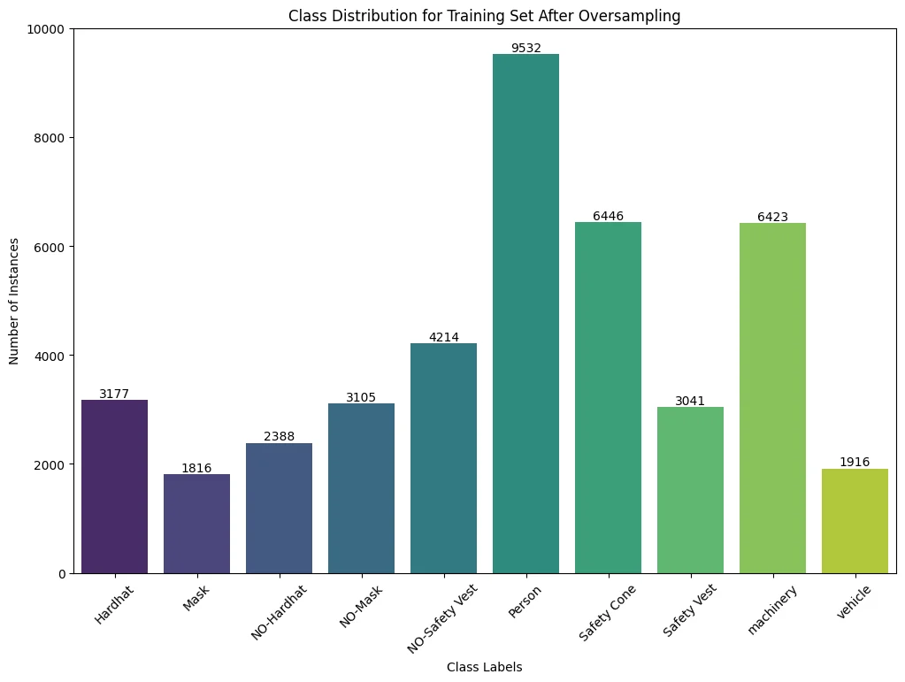
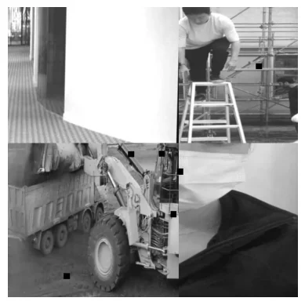
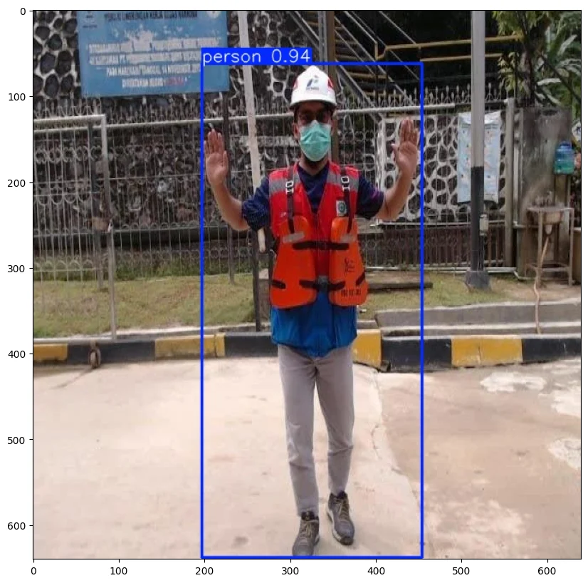
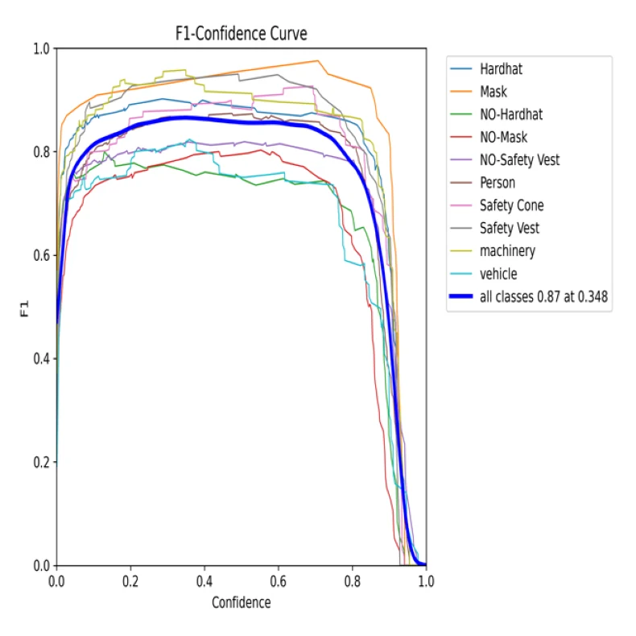
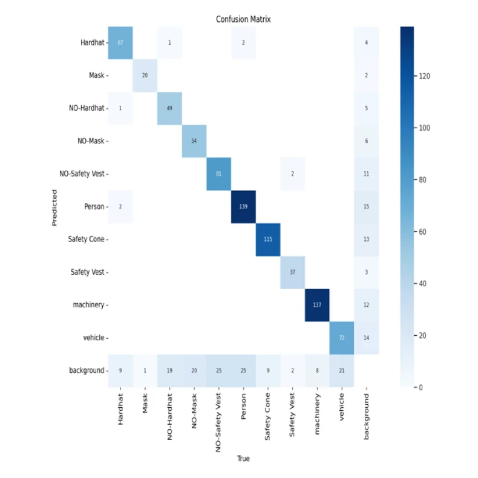
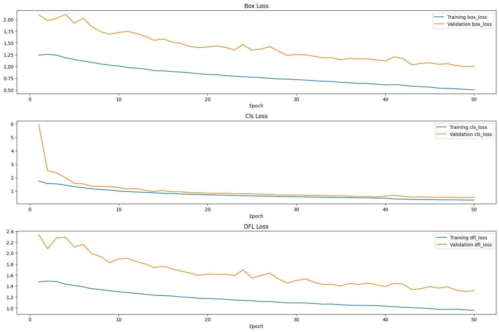

Fine-Tuned YOLO Model with Oversampling and Normalization
Main Features
The modeling process focused on the safety of construction workers and the presence of PPE gear. The following classes were used to train the model:
- Hardhat
- Mask
- NO-Hardhat
- NO-Mask
- NO-Safety Vest
- Person
- Safety Cone
- Safety Vest
- Machinery
- Vehicle
Model Choice
The YOLOv9 model was selected due to its efficient object detection capabilities.
Key Features Considered:
-
Convolutional Neural Network (CNN) Backbone: Utilizes CNN for feature extraction, essential for detecting and classifying objects in images.
-
CSPDarknet Architecture: The model leverages CSPDarknet, which helps in focusing on the crucial details in the image, optimizing both speed and accuracy in feature extraction.
-
Anchor-Free Detection: YOLOv9 uses an anchor-free approach, meaning it doesn’t rely on predefined areas (anchors) for object detection. Instead, it dynamically adapts to objects of varying sizes and shapes, enhancing detection accuracy across different object scales.
Package to install
Code cell 4
# !pip install ultralyticsImports
Code cell 6
import warnings
warnings.filterwarnings("ignore")
import os
import re
import glob
import torch
import random
import yaml
import shutil
import numpy as np
import pandas as pd
import matplotlib.pyplot as plt
from matplotlib.patches import Rectangle
import seaborn as sns
import IPython.display as display
from PIL import Image
import cv2
from ultralytics import YOLO
from google.colab import drivePre setup for drive access and configuration for YOLO model
Fine-Tuning Applied:
- Epochs: 50
-
Reduced the number of epochs to prevent overfitting, which could occur due to the oversampling applied.
-
Batch Size: 16
-
The number of training examples used in one iteration, set to 16 for better generalization.
-
Learning Rate: 1e-3
-
Defines the speed at which the model learns from the data.
-
Learning Rate Factor: 0.01
-
Controls the gradual reduction of the learning rate during training, allowing for faster initial learning and finer adjustments later.
-
Weight Decay: 5e-4
-
Penalizes large weights to prevent overfitting, ensuring the model generalizes well to new data.
-
Patience: 20
-
Specifies the number of epochs to wait without improvement in validation, helping to prevent overfitting by stopping training when further progress stalls.
-
Image Size (Imgsz): 640
-
Consistent image size of 640x640 pixels was maintained for uniformity in training.
-
Optimizer: ‘Auto’
- The optimizer adjusts the weights of the model during training to minimize the loss function, with automatic selection based on the model’s configuration.
Code cell 9
# Mount Google Drive
drive.mount('/content/drive')
# Define paths in Google Drive
drive_base_path = '/content/drive/MyDrive/Capstone'
# Directory paths
TRAIN_IMAGE_PATH = os.path.join(drive_base_path, 'data', 'images', 'train')
TEST_IMAGE_PATH = os.path.join(drive_base_path, 'data', 'images', 'test')
VALID_IMAGE_PATH = os.path.join(drive_base_path, 'data', 'images', 'valid')
TRAIN_LABEL_PATH = os.path.join(drive_base_path, 'data', 'labels', 'train')
VALID_LABEL_PATH = os.path.join(drive_base_path, 'data', 'labels', 'valid')
TEST_LABEL_PATH = os.path.join(drive_base_path, 'data', 'labels', 'test')
OUTPUT_DIR = os.path.join(drive_base_path, 'model')
class CFG:
DEBUG = False
FRACTION = 0.05 if DEBUG else 1.0
SEED = 88
CLASSES = ['Hardhat', 'Mask', 'NO-Hardhat', 'NO-Mask',
'NO-Safety Vest', 'Person', 'Safety Cone',
'Safety Vest', 'machinery', 'vehicle']
NUM_CLASSES = len(CLASSES)
# training
EPOCHS = 3 if DEBUG else 50 # updated
BATCH_SIZE = 16
BASE_MODEL = 'yolov9e'
BASE_MODEL_WEIGHTS = f'{BASE_MODEL}.pt'
EXP_NAME = f'ppe_css_{EPOCHS}_epochs'
OPTIMIZER = 'auto'
LR = 1e-3
LR_FACTOR = 0.01
WEIGHT_DECAY = 5e-4
DROPOUT = 0.0
PATIENCE = 20
PROFILE = False
LABEL_SMOOTHING = 0.1 #updated
DEVICE = 'cuda' if torch.cuda.is_available() else 'cpu'Oversampling
multiple runs were required with changes to the unwanted class parameters and specific classes to achieve more generalized oversampling results.
Code cell 11
import os
import glob
import shutil
def oversample_specific_classes(image_path, label_path, specific_classes, additional_count=1):
# Initialize class counts
class_counts = {cls: 0 for cls in CFG.CLASSES}
# Set of unwanted classes (Person and machinery)
unwanted_classes = {'Person', 'Safety Cone', 'machinery'}
# Count instances of each class and filter labels containing only specific classes
valid_label_files = []
for label_file in glob.glob(os.path.join(label_path, '*.txt')):
with open(label_file, 'r') as f:
lines = f.readlines()
classes_in_file = set(int(line.split()[0]) for line in lines)
# Convert class IDs to class names
classes_in_file_names = {CFG.CLASSES[class_id] for class_id in classes_in_file}
# Check if the label file contains only specific classes and no unwanted classes
if classes_in_file_names.issubset(set(specific_classes)) and not classes_in_file_names.intersection(unwanted_classes):
valid_label_files.append(label_file)
for class_id in classes_in_file:
class_counts[CFG.CLASSES[class_id]] += 1
# Identify classes that need oversampling
low_count_classes = [cls for cls in specific_classes if class_counts[cls] < 500]
print(f"Classes to be oversampled: {low_count_classes}")
for label_file in valid_label_files:
with open(label_file, 'r') as f:
lines = f.readlines()
for line in lines:
class_id = int(line.split()[0])
if CFG.CLASSES[class_id] in low_count_classes:
# Duplicate the image and label file
base_name = os.path.basename(label_file).replace('.txt', '')
img_file = os.path.join(image_path, base_name + '.jpg')
for i in range(additional_count):
new_img_file = os.path.join(image_path, f"{base_name}_aug_{i}.jpg")
new_label_file = os.path.join(label_path, f"{base_name}_aug_{i}.txt")
shutil.copy(img_file, new_img_file)
shutil.copy(label_file, new_label_file)
print("Oversampling complete.")
# Define the specific classes you want to oversample
specific_classes = ['Hardhat', 'Mask', 'NO-Hardhat', 'NO-Mask',
'NO-Safety Vest', 'Safety Vest', 'vehicle']
# Apply oversampling to the training dataset
oversample_specific_classes(TRAIN_IMAGE_PATH, TRAIN_LABEL_PATH, specific_classes)
Oversampling results checking
Code cell 13
import os
import matplotlib.pyplot as plt
import seaborn as sns
# Define the class labels
class_labels = ['Hardhat', 'Mask', 'NO-Hardhat', 'NO-Mask', 'NO-Safety Vest',
'Person', 'Safety Cone', 'Safety Vest', 'machinery', 'vehicle']
# Path to the training labels directory after oversampling
train_label_dir = TRAIN_LABEL_PATH
# Initialize a dictionary to count each class
class_counts = {label: 0 for label in class_labels}
# Iterate through the training label directory
for label_file in os.listdir(train_label_dir):
if label_file.endswith('.txt'):
with open(os.path.join(train_label_dir, label_file), 'r') as f:
for line in f:
class_idx = int(line.split()[0])
class_counts[class_labels[class_idx]] += 1
# Plot the class distribution for the training set
plt.figure(figsize=(12, 8))
ax = sns.barplot(x=list(class_counts.keys()), y=list(class_counts.values()), palette='viridis')
# Add text annotations on the bars
for i in range(len(class_counts)):
ax.text(i, list(class_counts.values())[i], str(list(class_counts.values())[i]), ha='center', va='bottom')
plt.title('Class Distribution for Training Set After Oversampling')
plt.xlabel('Class Labels')
plt.ylabel('Number of Instances')
plt.xticks(rotation=45)
plt.show()
- Instance Ratio:
-
The overall ratio between the ‘Person’ class and other classes did not change significantly, as most images had a person labeled.
-
Increase in Instances:
-
Significant improvements were observed in the number of instances for the classes ‘Mask,’ ‘No-Safety Vest,’ ‘Safety Cone,’ ‘Machinery,’ and ‘Vehicle,’ with increases of up to over 1200 instances for some classes.
-
Safety Cone Class:
- The drastic increase in the ‘Safety Cone’ class was unavoidable due to many images containing safety cones, leading to a higher instance count.
Creating yaml file for YOLO model to access
Code cell 16
def create_yaml_file():
dict_file = {
'train': TRAIN_IMAGE_PATH,
'val': VALID_IMAGE_PATH,
'test': TEST_IMAGE_PATH,
'nc': CFG.NUM_CLASSES,
'names': CFG.CLASSES
}
yaml_path = os.path.join(OUTPUT_DIR, 'data.yaml')
os.makedirs(OUTPUT_DIR, exist_ok=True)
with open(yaml_path, 'w+') as file:
yaml.dump(dict_file, file)
return yaml_pathCode cell 17
### read yaml file created
def read_yaml_file(file_path = OUTPUT_DIR):
with open(file_path, 'r') as file:
try:
data = yaml.safe_load(file)
return data
except yaml.YAMLError as e:
print("Error reading YAML:", e)
return None
### print it with newlines
def print_yaml_data(data):
formatted_yaml = yaml.dump(data, default_style=False)
print(formatted_yaml)
file_path = os.path.join(OUTPUT_DIR, 'data.yaml')
yaml_data = read_yaml_file(file_path)
if yaml_data:
print_yaml_data(yaml_data)Checking Image Sizes
Code cell 19
mode_paths = {
'train': TRAIN_IMAGE_PATH,
'valid': VALID_IMAGE_PATH,
'test': TEST_IMAGE_PATH,
}
for mode, path in mode_paths.items():
print(f'\nImage sizes in {mode} set:')
img_size = 0
for file in glob.glob(os.path.join(path, '*')):
image = Image.open(file)
if image.size != img_size:
print(f'{image.size}')
img_size = image.size
print('\n')Normalisation Process
Code cell 21
from PIL import Image
import numpy as np
import matplotlib.pyplot as plt
import os
def preprocess_image(image_path):
try:
with Image.open(image_path) as img:
img_array = np.array(img)
normalized_image_array = img_array / 255.0 # Normalize to [0,1]
return normalized_image_array, img_array
except Exception as e:
print(f"Error processing image at {image_path}: {e}")
return None, None
def save_normalized_image(normalized_array, original_image_path, save_dir):
save_path = os.path.join(save_dir, os.path.basename(original_image_path))
normalized_img = Image.fromarray((normalized_array * 255).astype(np.uint8)) # Convert back to uint8
normalized_img.save(save_path)
print(f"Saved normalized image to {save_path}")
def display_image(normalized_array):
plt.imshow(normalized_array)
plt.axis('off')
plt.show()
# Directory paths
train_image_path = TRAIN_IMAGE_PATH
test_image_path = TEST_IMAGE_PATH
valid_image_path = VALID_IMAGE_PATH
# Save directories
normalized_train_dir = os.path.join(drive_base_path, 'data', 'normalized_images', 'train')
normalized_test_dir = os.path.join(drive_base_path, 'data', 'normalized_images', 'test')
normalized_valid_dir = os.path.join(drive_base_path, 'data', 'normalized_images', 'valid')
os.makedirs(normalized_train_dir, exist_ok=True)
os.makedirs(normalized_test_dir, exist_ok=True)
os.makedirs(normalized_valid_dir, exist_ok=True)
# Process and save images of train
if os.access(train_image_path, os.R_OK):
for filename in os.listdir(train_image_path):
if filename.endswith('.jpg') or filename.endswith('.png'):
image_path = os.path.join(train_image_path, filename)
print(f"Processing image: {image_path}")
normalized_array, _ = preprocess_image(image_path)
if normalized_array is not None:
save_normalized_image(normalized_array, image_path, normalized_train_dir)
else:
print(f"Cannot access {train_image_path} for reading images.")
# Process and save images of test
if os.access(test_image_path, os.R_OK):
for filename in os.listdir(test_image_path):
if filename.endswith('.jpg') or filename.endswith('.png'):
image_path = os.path.join(test_image_path, filename)
print(f"Processing image: {image_path}")
normalized_array, _ = preprocess_image(image_path)
if normalized_array is not None:
save_normalized_image(normalized_array, image_path, normalized_test_dir)
else:
print(f"Cannot access {test_image_path} for reading images.")
# Process and save images of valid
if os.access(valid_image_path, os.R_OK):
for filename in os.listdir(valid_image_path):
if filename.endswith('.jpg') or filename.endswith('.png'):
image_path = os.path.join(valid_image_path, filename)
print(f"Processing image: {image_path}")
normalized_array, _ = preprocess_image(image_path)
if normalized_array is not None:
save_normalized_image(normalized_array, image_path, normalized_valid_dir)
else:
print(f"Cannot access {valid_image_path} for reading images.")
# Display one normalized image for verification
sample_image_path = os.path.join(normalized_train_dir, os.listdir(normalized_train_dir)[0])
normalized_array, _ = preprocess_image(sample_image_path)
if normalized_array is not None:
print(f"Displaying normalized image: {sample_image_path}")
display_image(normalized_array)
Normalisation Process
Code cell 23
def get_image_properties(image_path):
# Read the image file
img = cv2.imread(image_path)
# Check if the image file is read successfully
if img is None:
raise ValueError("Could not read image file")
# Get image properties
properties = {
"width": img.shape[1],
"height": img.shape[0],
"channels": img.shape[2] if len(img.shape) == 3 else 1,
"dtype": img.dtype,
}
return propertiesCode cell 24
example_file_path = '/content/drive/MyDrive/Capstone/data/images/test/image_53_jpg.rf.3446e366b5d4d905a32e1aedc8fe87de.jpg'
image_properties = get_image_properties(example_file_path)
image_propertiesText output
{'width': 640, 'height': 640, 'channels': 3, 'dtype': dtype('uint8')}Checking model
Code cell 26
CFG.BASE_MODEL_WEIGHTSText output
'yolov9e.pt'
YOLO model baseline inference
Code cell 28
model = YOLO(CFG.BASE_MODEL_WEIGHTS)
device_str = CFG.DEVICE if CFG.DEVICE == 'cpu' else 'cuda:0'
results = model.predict(
source = example_file_path,
classes = [0],
conf = 0.30,
device = device_str,
imgsz = (image_properties['height'], image_properties['width']),
save = True,
save_txt = True,
save_conf = True,
exist_ok = True,
)Code cell 29
def resize_image(image_path, img_size):
img = Image.open(image_path)
img = img.resize((img_size, img_size))
return img
def display_image(image_path, img_size=640, print_info=True, hide_axis=False):
img = resize_image(image_path, img_size)
plt.figure(figsize=(10, 10))
plt.imshow(img)
if print_info:
print('Type: ', type(img))
print('Shape: ', np.array(img).shape)
if hide_axis:
plt.axis('off')
plt.show()Code cell 30
example_image_inference_output = example_file_path.split('/')[-1]
display_image(f'/content/runs/detect/predict/{example_image_inference_output}')
Code cell 31
print('Model: ', CFG.BASE_MODEL_WEIGHTS)
print('Epochs: ', CFG.EPOCHS)
print('Batch: ', CFG.BATCH_SIZE)Assigning yaml and creating fine tuned YOLO model
Code cell 33
yaml_path = create_yaml_file()Code cell 34
def train_model(yaml_path):
model = YOLO(CFG.BASE_MODEL_WEIGHTS)
img_properties = {'width': 640, 'height': 640}
# Use 'cuda' or 'cuda:0' if you have a single GPU
device_str = CFG.DEVICE if CFG.DEVICE == 'cpu' else 'cuda:0'
model.train(
data=yaml_path,
task='detect',
imgsz=(img_properties['height'], img_properties['width']),
epochs=CFG.EPOCHS,
batch=CFG.BATCH_SIZE,
optimizer=CFG.OPTIMIZER,
lr0=CFG.LR,
lrf=CFG.LR_FACTOR,
weight_decay=CFG.WEIGHT_DECAY,
dropout=CFG.DROPOUT,
fraction=CFG.FRACTION,
patience=CFG.PATIENCE,
profile=CFG.PROFILE,
label_smoothing=CFG.LABEL_SMOOTHING,
name=f'{CFG.BASE_MODEL}_{CFG.EXP_NAME}',
seed=CFG.SEED,
val=True,
amp=True,
exist_ok=True,
resume=False,
device=device_str, # Changed to use single GPU or CPU
verbose=False,
)
return modelCode cell 35
model = train_model(yaml_path)Code cell 36
image_propertiesText output
{'width': 640, 'height': 640, 'channels': 3, 'dtype': dtype('uint8')}Exporting model for deployment and testing
Code cell 38
def export_model(model):
# Export the model for deployment
model.export(
format='onnx', # Could be 'openvino', 'engine', 'tflite', etc.
imgsz=(640, 640),
half=False,
int8=False,
simplify=False,
nms=False,
)Code cell 39
export_model(model)Checking Model Evaluation
Code cell 41
results_paths = [
i for i in
glob.glob(f'/content/runs/detect/yolov9e_ppe_css_50_epochs/*.png') +
glob.glob(f'/content/runs/detect/yolov9e_ppe_css_50_epochs/*.jpg')
if 'batch' not in i
]
results_pathsText output
['/content/runs/detect/yolov9e_ppe_css_50_epochs/R_curve.png', '/content/runs/detect/yolov9e_ppe_css_50_epochs/P_curve.png', '/content/runs/detect/yolov9e_ppe_css_50_epochs/PR_curve.png', '/content/runs/detect/yolov9e_ppe_css_50_epochs/confusion_matrix_normalized.png', '/content/runs/detect/yolov9e_ppe_css_50_epochs/F1_curve.png', '/content/runs/detect/yolov9e_ppe_css_50_epochs/results.png', '/content/runs/detect/yolov9e_ppe_css_50_epochs/confusion_matrix.png', '/content/runs/detect/yolov9e_ppe_css_50_epochs/labels.jpg', '/content/runs/detect/yolov9e_ppe_css_50_epochs/labels_correlogram.jpg']
Please refer to my report for evaluation of the important results
Code cell 43
for file in sorted(results_paths):
print(file)
display_image(file, print_info=False, hide_axis=True)
print('\n')





Saving numeriacal results to access as csv
Code cell 45
results = pd.read_csv('/content/runs/detect/yolov9e_ppe_css_50_epochs/results.csv')
results.to_csv(f'{OUTPUT_DIR}/results.csv', index=False)Plotting training metrics from CSV
Code cell 47
# Function to plot training metrics from CSV
def plot_training_metrics(df):
metrics = ['box_loss', 'cls_loss', 'dfl_loss']
titles = ['Box Loss', 'Cls Loss', 'DFL Loss']
plt.figure(figsize=(15, 10))
for i, metric in enumerate(metrics):
plt.subplot(3, 1, i + 1)
plt.plot(df['epoch'], df[f'train/{metric}'], label=f'Training {metric}')
plt.plot(df['epoch'], df[f'val/{metric}'], label=f'Validation {metric}')
plt.title(titles[i])
plt.xlabel('Epoch')
plt.legend()
plt.tight_layout()
plt.show()Code cell 48
def print_best_performance(df):
print('*' * 50)
print('\nBest Training Box loss: ', df['train/box_loss'].min(), ', on epoch: ', df['train/box_loss'].idxmin() + 1, '\n')
print('Best Validation Box loss: ', df['val/box_loss'].min(), ', on epoch: ', df['val/box_loss'].idxmin() + 1, '\n')
print('=' * 50)
print('\nBest Training Cls loss: ', df['train/cls_loss'].min(), ', on epoch: ', df['train/cls_loss'].idxmin() + 1, '\n')
print('Best Validation Cls loss: ', df['val/cls_loss'].min(), ', on epoch: ', df['val/cls_loss'].idxmin() + 1, '\n')
print('=' * 50)
print('\nBest Training DFL loss: ', df['train/dfl_loss'].min(), ', on epoch: ', df['train/dfl_loss'].idxmin() + 1, '\n')
print('Best Validation DFL loss: ', df['val/dfl_loss'].min(), ', on epoch: ', df['val/dfl_loss'].idxmin() + 1, '\n')Code cell 49
df = pd.read_csv(r'/content/runs/detect/yolov9e_ppe_css_50_epochs/results.csv')
df = df.rename(columns=lambda x: x.replace(" ", ""))
df.to_csv(f'{OUTPUT_DIR}/training_log_df.csv', index=False)
plot_training_metrics(df)
print_best_performance(df)
Testing model on all testing images
Code cell 51
model = YOLO(f'{drive_base_path}/yolov9e_ppe_css_50_epochs_w_loss/yolov9e_ppe_css_50_epochs_w_loss/weights/best.pt')
def perform_inference_and_visualize_all(model):
model = YOLO(f'{drive_base_path}/yolov9e_ppe_css_50_epochs_w_loss/yolov9e_ppe_css_50_epochs_w_loss/weights/best.pt')
# List all image files in the test directory
test_image_files = [f for f in os.listdir(TEST_IMAGE_PATH) if f.endswith(('.jpg', '.png', '.jpeg'))]
# Iterate over each test image
for image_file in test_image_files:
test_image_path = os.path.join(TEST_IMAGE_PATH, image_file)
# Perform inference on the test image
results = model.predict(test_image_path, conf=0.25, device=CFG.DEVICE)
# Display the result
result_image = results[0].plot()
plt.figure(figsize=(12, 12))
plt.imshow(cv2.cvtColor(result_image, cv2.COLOR_BGR2RGB))
plt.axis('off')
plt.title(f'Test Image Prediction: {image_file}')
plt.show()Code cell 52
perform_inference_and_visualize_all(model)Saving the model to drive to download
Code cell 54
import shutil
# Source directory path in Colab
source_dir = '/content/runs/detect' # Replace with your actual directory path
# Destination directory in Google Drive
destination_dir = '/content/drive/MyDrive/Capstone/yolov9e_ppe_css_51_epochs_w_loss' # Replace with the desired path in Google Drive
# Copy the directory to Google Drive
shutil.copytree(source_dir, destination_dir)
print("Directory saved to Google Drive.")Applying the model to test on video using 'Bytetrack'
Code cell 56
import os
from google.colab import drive
from IPython.display import HTML
from base64 import b64encode
from ultralytics import YOLO
# Mount Google Drive
drive.mount('/content/drive')
# Define paths
drive_base_path = '/content/drive/MyDrive/Capstone'
weights_dir = os.path.join(drive_base_path, 'yolov9e_ppe_css_50_epochs_w_loss', 'yolov9e_ppe_css_50_epochs', 'weights')
video_path = os.path.join(drive_base_path, 'construction workers.mp4') # Update this path to the actual video location
save_dir = os.path.join(drive_base_path, 'tracking_results_50_epochs')
# Load the trained detection model
model = YOLO(os.path.join(weights_dir, 'best.pt'))
# Run tracking
tracking_results = model.track(
source=video_path,
show=True,
save=True,
name=save_dir,
imgsz=640,
tracker="bytetrack.yaml" # Using ByteTrack
)
Convert output video from .avi to .mp4
!ffmpeg -i /content/drive/MyDrive/Capstone/tracking_results_50_epochs/construction workers.avi /content/drive/MyDrive/Capstone/tracking_results_50_epochs/construction_workersg.mp4
# !ffmpeg -i /content/drive/MyDrive/Capstone/tracking_results2/JapanPPE.avi /content/drive/MyDrive/Capstone/tracking_results2/JapanPPEc.mp4
Code cell 57
def play_video(filename):
video_data = open(filename, 'rb').read()
video_src = 'data:video/mp4;base64,' + b64encode(video_data).decode()
html = f'<video width=1000 controls autoplay loop><source src="{video_src}" type="video/mp4"></video>'
return HTML(html)
# Display the converted video
play_video('/content/drive/MyDrive/Capstone/tracking_results/construction_workersg.mp4')